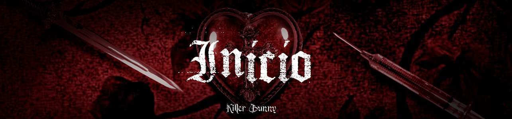
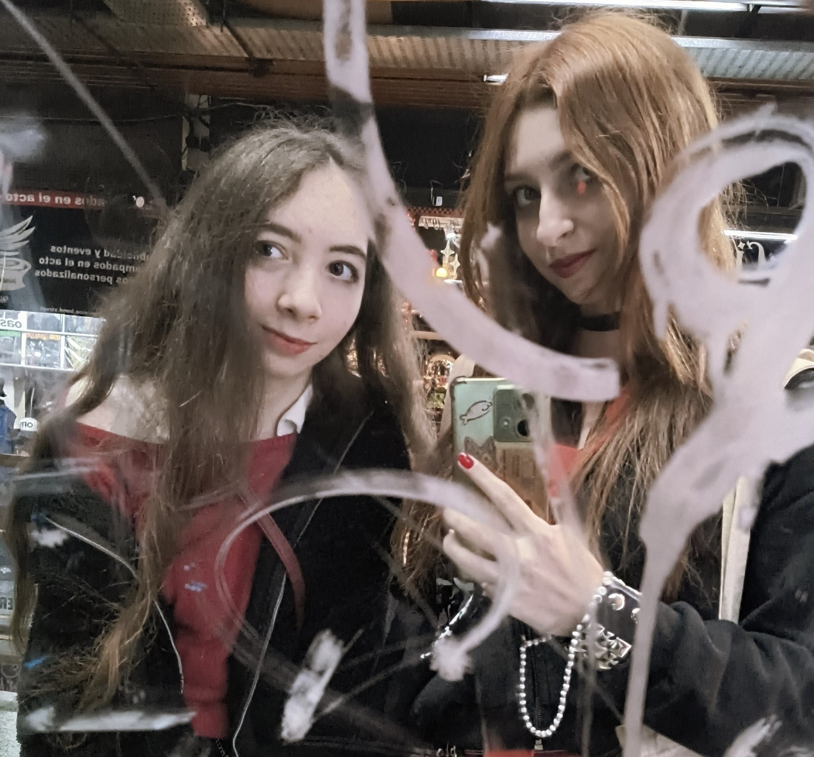

Intro
Cuando hablamos de ellos lo primero que se nos viene a la mente son esos peinados oscuros que te cubren un ojo, esas ropas que mezclan los colores llamativos con un negro que los constrasta e incluso en personas con una actitud negativa que viven sumidos en a la tristeza. ¿Pero son simplemente eso? ¡Claro que no! Así que nos encantaría darles a conocer un poco más de quienes son ellos de verdad, cómo es que surgieron y su influencia en la actualidad.